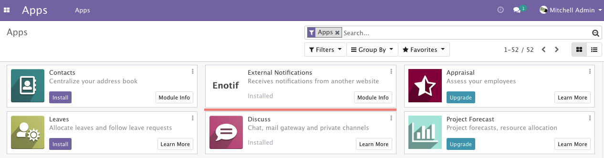
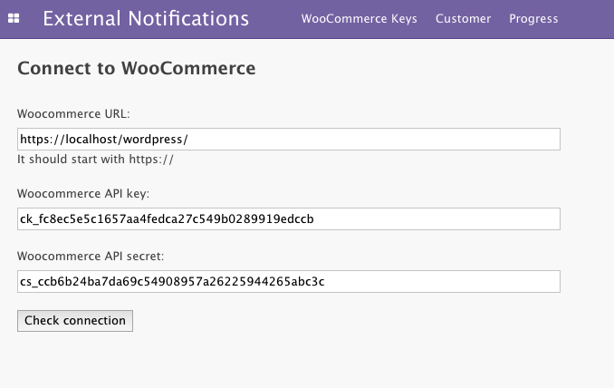
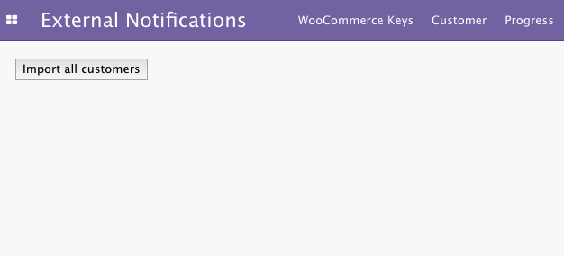
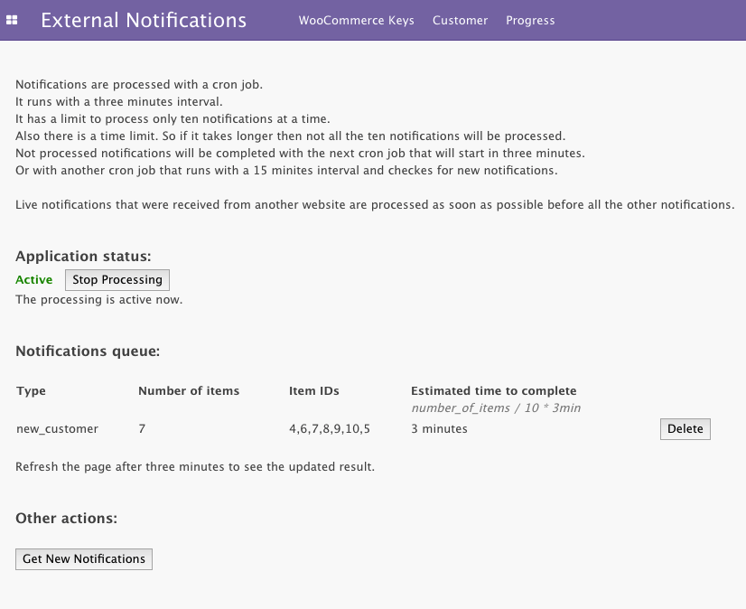
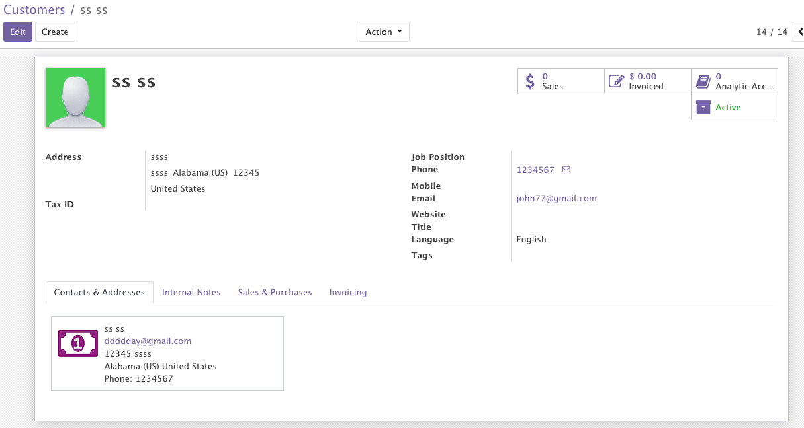

Enotif WooCommerce Customer
This module automatically creates a new customer on the Odoo website just in few minutes after it was registered on the WooCommerce website.
Usage
1) Install the
Notify Odoo wordpress plugin.
2) Specify URL of your Odoo website in it.
3) Activate WordPress REST API and get the keys.
4) On the Odoo website install this module.
5) Specify your WooCommerce URL and the secret keys.
6) Try to register a new customer on WooCommerce and wait. It should appear on the Odoo website in few minutes.
Features
- Receives notifications of a new customer from WooCommerce and then save the customers on the Odoo website.
- Can import all customers from WooCommerce to Odoo.
Docs
Online README file for this module.
Online README file for the "Notify Odoo" wordpress plugin.
Links
You can check your connection from Odoo to WooCommerce with the FREE enotif_woo module.
Screenshots
The "External Notifications" module is free and it is included with this module.

Specify WooCommerce API keys.

A button to import all customers from WooCommerce. If you need.

You can view how the importing process goes.

A new customer that has been imported from WooCommerce.
